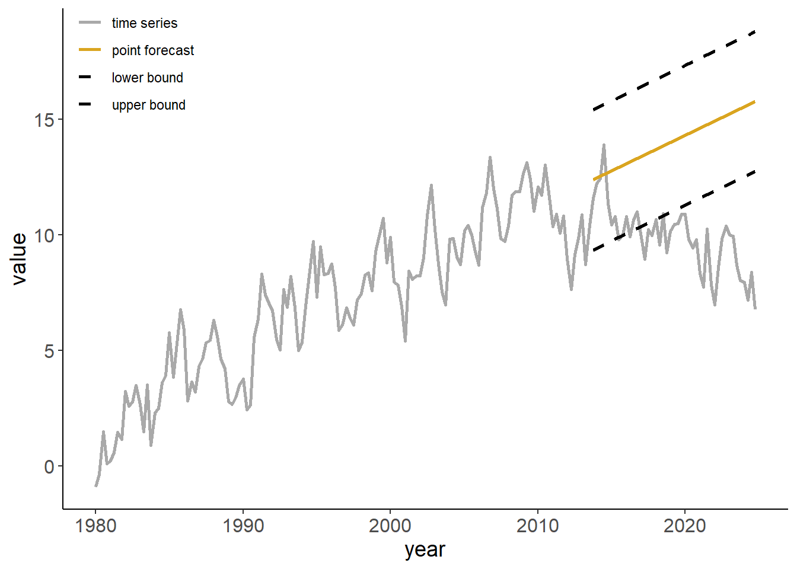

Chapter 3 Trends and Seasonality
Economic time series usually are characterized by trending behavior, and often present a seasonal pattern as well. Trend is a unidirectional change of time series over an extended period of time that arises from the accumulation of information over time. Seasonality is a repeating pattern within a calendar year that arises from the links of technologies, preferences, and institutions to the calendar. Modeling and forecasting these time series features is a fairly straightforward task. But before we get to it, let’s discuss what may happen if we were to ignore the presence of trends and/or seasonality when analyzing the time series data.
3.1 Spurious Relationship
Nothing about trending time series necessarily violates the classical linear regression model assumptions. The issue may arise, however, if an unobserved trending variable is simultaneously correlated with the dependent variable as well as one of the independent variables in a time series regression. In such case, we may find a (statistically significant) relationship between two or more unrelated economic variables simply because they are all trending. Such relationship is referred to a spurious relationship.
To illustrate, consider two trending variables: \[y_t = \gamma t + \nu_t,\;~~\nu\sim N(0,\sigma_{\nu}^2),\] and \[x_t = \delta t + \upsilon_t,\;~~\upsilon\sim N(0,\sigma_{\upsilon}^2),\] where \(Cov(\nu_t,\upsilon_t) = 0\). For simplicity, we can assume \(\sigma_{\nu}^2=\sigma_{\upsilon}^2=1\). Suppose, \(\gamma\) and \(\delta\) are some positive scalars, say, \(0.3\) and \(0.5\), respectively. That is, \(y\) and \(x\) are trending in the same direction. Below is an example of such time series:

If we were to estimate \[y_t = \alpha+\beta x_t + \varepsilon_t,\] we are likely to find the relationship between the two – in this case \(\beta>0\) – even though, we know, the two are not related. To illustrate this, we will generate 1000 samples of size 120 for \(y\) and \(x\), and in each case we will estimate the parameter \(\beta\). The following graph illustrates the empirical distribution of these parameter estimates:

Luckily, we can easily “fix” the issue, by incorporating a trend in the regression: \[y_t = \alpha+\beta x_t + \eta t + \varepsilon_t.\] Once the trend is accounted for, the previously illustrated “bias” disappears. Using a similar simulation exercise as before, the following graph illustrates the empirical distribution of these parameter estimates:

In fact, this “fix” is equivalent to regressing a de-trended \(y\) on a de-trended \(x\). To de-trend a variable, we first run a regression: \(y_t = \gamma_0 + \gamma_1 t + \nu_t\), and then obtain the fitted values for some fixed trend (typically zero), that is: \(\tilde{y}_t = \hat{\gamma}_0+\hat{\nu}_t\), where \(\hat{\gamma}_0\) and \(\hat{\nu}_t\) are the parameter estimate and the residuals from the foregoing regression.
3.2 Trends
3.2.1 Modeling
As seen, accounting for trends in a time series can help us resolve some regression issues. But a trend in and of itself can be an inherent feature of a times series. To that end, we can apply deterministic trends to forecast time series.
The simplest (and perhaps most frequently applied) model to account for the trending time series is a linear trend model: \[y_t = \alpha + \beta t\]
Other likely candidate trend specifications are polynomial (e.g. quadratic, cubic, etc.), exponential, and shifting (or switching) trend models, respectively given by: \[\begin{aligned} y_t &= \alpha + \beta_1 t + \beta_2 t^2 + \ldots + \beta_p t^p \\ y_t &= e^{\alpha + \beta t}\;~~\mbox{or}\;~~\ln{y_t} = \alpha + \beta t \\ y_t &= \alpha + \beta_1 t + \beta_2 (t-\tau)I(t>\tau),\;~~\tau\in\mathsf{T} \end{aligned}\]
Of these, here we will primarily consider linear and quadratic trends. An exponential trend, from the standpoint of modeling and forecasting, is equivalent to a linear trend fitted to natural logarithm of the series. For a time series \(\{y_t: t=1,\ldots,T\}\), the natural logarithm is: \(z_t = \ln{y_t}\). Some of the benefits of such a transformation are that:
- they are easier to interpret (relative/percentage change).
- they homogenizes the variance of the time series.
- they may result in improved forecasting accuracy.
Exponential trends are suitable when a time series is characterized by a stable relative change over time (e.g., when economic time series grow by 2% every year).
We will cover the shifting/switching trend models in another chapter.
3.2.2 Forecasting
Trends are (relatively) easy to model and forecast. Caution is needed, however, with (higher order) polynomial trends, as they may fit well in-sample, but cause major problems out-of-sample.
Consider a linear trend model with an additive error term: \[y_t = \alpha + \beta t + \varepsilon_t\] We estimate the model parameters, \(\mathbf{\theta}=\{\alpha,\beta\}\), by fitting the trend model to a time series using the least-squares regression: \[\hat{\theta} = \operatorname*{argmin}_{\mathbf{\theta}} \sum_{t=1}^{T}\big(y_t - \alpha - \beta t\big)^2.\] Fitted values are then given by: \[\hat{y}_t = \hat{\alpha} + \hat{\beta} t\]
Any future realization of a random variable is assumed to follow a linear trend model: \[y_{t+h} = \alpha + \beta (t+h) + \varepsilon_{t+h}.\]
An optimal forecast of \(y_{t+h}\), therefore, is given by: \[y_{t+h|t} = E(y_{t+h}|\Omega_t) = E[\alpha + \beta (t+h) + \varepsilon_{t+h}] = \alpha + \beta (t+h).\]
The forecast error is: \[e_{t+h|t} = y_{t+h} - y_{t+h|t} = \varepsilon_{t+h}\]
The forecast variance, then, is: \[\sigma_{t+h|t}^2 = E(e_{t+h|t}^2) = E(\varepsilon_{t+h}^2) = \hat{\sigma}^2,\;~~\forall\;h\]
From this, we can obtain interval forecast at any horizon, which is: \[y_{t+h|t} \pm 1.96 \hat{\sigma}.\]
A few features of trend forecasts to note:
- they tend to understate uncertainty (at long horizons as the forecast interval doesn not widen with the horizon);
- short-term trend forecasts can perform poorly; long-term trend forecasts typically perform poorly;
- sometimes it may be beneficial, from the standpoint of achieving better accuracy, to forecast growth rates, and then reconstruct level forecasts.
3.3 Seasonality
3.3.1 Modeling
Seasonality is typically modeled as monthly or quarterly pattern, but can also be modeled as a higher frequency pattern (e.g. weekly). Some examples of time series with apparent seasonal patterns are:
- Agricultural production.
- Sales of energy products.
- Airfare (in non-pandemic times).
One way to deal with the seasonality in data is to “remove” it prior to the use of the series (i.e., work with a seasonally adjusted time series). Indeed, some economic time series are only/also available in a seasonally-adjusted form.
Otherwise, and perhaps more interestingly, we can directly model seasonality in a regression setting by incorporating seasonal dummy variables.
A seasonal model is given by: \[y_t = \sum_{i=1}^{s}\gamma_i d_{it} + \varepsilon_t,\] where \(s\) denotes the frequency of the data, and \(d_{it}\) takes the value of 1 repeatedly after every \(s\) periods, and such that \(\sum_{i} d_{it} = 1\), \(\forall t\).
Alternatively the seasonal model can be rewritten as: \[y_t = \alpha + \sum_{i=1}^{s-1}\delta_i d_{it} + \varepsilon_t,\] in which case \(\alpha\) is an intercept of an omitted season, and \(\delta_i\) represents a deviation from it during the \(i^{th}\) season.
Both variants of the seasonal model result in an identical fit and forecasts.
3.3.2 Forecasting
Any future realization of a random variable that i assumed to follow a seasonal model is: \[y_{t+h} = \alpha + \sum_{i=1}^{s-1}\delta_i d_{i,t+h} + \varepsilon_{t+h}.\]
The optimal forecast of \(y_{t+h}\) is: \[y_{t+h|t} = E(y_{t+h}|\Omega_t) = \alpha + \sum_{i=1}^{s-1}\delta_i d_{i,t+h}\]
The forecast error is: \[e_{t+h|t} = y_{t+h} - y_{t+h|t} = \varepsilon_{t+h}\]
The forecast variance is given by: \[\sigma_{t+h|t}^2 = E(e_{t+h|t}^2) = E(\varepsilon_{t+h}^2) = \hat{\sigma}^2,\;~~\forall\;h\]
The interval forecast at any horizon is: \[y_{t+h|t} \pm 1.96 \hat{\sigma}.\]
3.4 Exercise
# set the length of a time series to 180 (e.g., 15 years of monthly data)
n <- 180
# set seed to 2 and generate a sequence of standard normal error terms
set.seed(2)
e <- rnorm(n)
# suppose the data generating process of a time series is:
# y_{t} = 0.7*y_{t-1}+0.01*t+e_{t}
# simulate these series, assume y_{0} = 0.
y <- e
y[1] <- 0.01+e[1]
for(i in 2:n){
y[i] <- 0.7*y[i-1]+0.05*i-0.0002*i^2+e[i]
}
# store the simulated series in a data.table, where the first column is a column of dates
dt <- data.table(year=seq(as.Date("1980-01-01"),by="quarter",along.with=y),y=y,trend=c(1:n))
# plot the series (using ggplot)
ggplot(dt,aes(x=year,y=y))+
geom_line(size=1)+
theme_classic()+
theme(axis.title=element_text(size=14),axis.text=element_text(size=12))
# suppose we think the linear trend model is appropriate; use the first 120 observations
# to estimate trend, and using this estimatem generate forecasts for the remaining series
R <- round(.75*n)
reg <- lm(y[1:R]~trend[1:R],data=dt)
# store the vector of coefficients
theta <- reg$coefficients
# calculate the residual standard deviation
sigma <- sqrt(crossprod(reg$residuals)/(R-2))
# generated and include in the dataset the fitted values and 90% CI bounds
dt[,`:=`(yhat=(theta[1]+theta[2]*trend))]
dt[,`:=`(y.lo=(yhat-1.96*as.vector(sigma)),y.hi=(yhat+1.96*as.vector(sigma)))]
# set the fitted values of the in-sample range to NA
dt[trend <= R,c("yhat","y.lo","y.hi")] <- NA
# re-arrange the dataset into the "long" format (helpful for plotting)
dt_long <- melt(dt[,.(year,y,yhat,y.lo,y.hi)],id.vars="year")
# plot the out-of-sample forecasts along with the observed time series
ggplot(dt_long,aes(x=year,y=value,color=variable,linetype=variable))+
geom_line(na.rm=T,size=1)+
scale_color_manual(breaks = c("y","yhat","y.lo","y.hi"),labels = c("time series","point forecast","lower bound","upper bound"),values = c("darkgray","goldenrod","black","black"))+
scale_linetype_manual(breaks = c("y","yhat","y.lo","y.hi"),labels = c("time series","point forecast","lower bound","upper bound"),values = c(1,1,2,2))+
theme_classic()+
theme(axis.title=element_text(size=14),axis.text=element_text(size=12),legend.position = c(.1,.9),legend.title=element_blank())